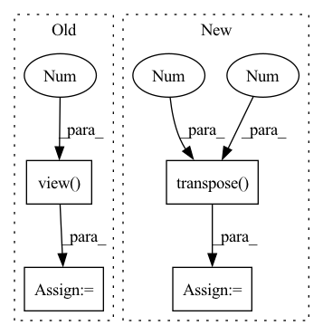

Pattern ID :1567
Before Change
for i in range(c.shape[1]):
_, indices = torch.sort(c[:, i], 0, True)
feats = torch.index_select(feats, 0, indices) // N x K, sorted
q_max = self.q(feats[0].view(1 , -1) ) // 1 x 1 x Q
temp = torch.mm(Q, q_max.view(-1, 1)) / torch.sqrt(torch.tensor(Q.shape[1], dtype=torch.float32, device=device))
if i == 0:
A = F.softmax(temp, 0) // N x 1
B = torch.sum(torch.mul(A, V), 0).view(1, -1) // 1 x V
else:
temp = F.softmax(temp, 0) // N x 1After Change
q_max = self.q(m_feats) // compute queries of critical instances, q_max in shape C x Q
A = torch.mm(Q, q_max.transpose(0, 1)) // compute inner product of Q to each entry of q_max, A in shape N x C, each column contains unnormalized attention scores
A = F.softmax( A / torch.sqrt(torch.tensor(Q.shape[1], dtype=torch.float32, device=device)), 0) // normalize attention scores, A in shape N x C,
B = torch.mm(A.transpose(0 , 1 ) , V) // compute bag representation, B in shape C x V
// for i in range(c.shape[1]):In pattern: SUPERPATTERN
Frequency: 4
Non-data size: 4
Instances Fragment ID: 5374914
Project Name: binli123/dsmil-wsi
Commit Name: 37d945844a0af37d411b5f1d3fca75a72b4aa979
Time: 2021-04-21
Author: bli346@wisc.edu
File Name: dsmil.py
M Class Name: BClassifier
N Class Name: BClassifier
M Method Name: forward(3)
N Method Name: forward(3)
M Parent Class: nn.Module
N Parent Class: nn.Module
M File Name: dsmil.py
N File Name: dsmil.py
M Start Line: 42
M End Line: 56
N Start Line: 42
N End Line: 51
Before Change
item_eb_hat = torch.sum(self.w[:, :self.seq_len, :, :] * u,
-1) // shape=(batch_size, seq_len, hidden_size*interest_num)
item_eb_hat = item_eb_hat.view(-1 , self.seq_len, self.interest_num, self.hidden_size)
item_eb_hat = item_eb_hat.permute(0, 2, 1, 3).contiguous()
item_eb_hat = item_eb_hat.view(-1, self.interest_num, self.seq_len,
self.hidden_size) // [batch_size, num_interest, seq_len, hidden_size]
After Change
dim=3) // shape=(batch_size, maxlen, hidden_size*interest_num)
item_eb_hat = torch.reshape(item_eb_hat, (-1, self.seq_len, self.interest_num, self.hidden_size))
item_eb_hat = torch.transpose( item_eb_hat, 1 , 2 ) .contiguous()
item_eb_hat = torch.reshape(item_eb_hat, (-1, self.interest_num, self.seq_len, self.hidden_size))
// [b, in, s, h] Fragment ID: 5374913
Project Name: hasai666/rec_pangu
Commit Name: edb52c9a2e35045250d5fda164df336768f37599
Time: 2023-03-24
Author: wangkai@fuzhi.ai
File Name: rec_pangu/models/layers/multi_interest.py
M Class Name: CapsuleNetwork
N Class Name: CapsuleNetwork
M Method Name: forward(4)
N Method Name: forward(4)
M Parent Class: nn.Module
N Parent Class: nn.Module
M File Name: rec_pangu/models/layers/multi_interest.py
N File Name: rec_pangu/models/layers/multi_interest.py
M Start Line: 102
M End Line: 172
N Start Line: 94
N End Line: 154
Before Change
mel_outputs, alignments, stop_tokens = self.decoder(
encoder_outputs, mel_specs, mask,
self.speaker_embeddings_projected)
mel_outputs = mel_outputs.view( B, -1 , self.mel_dim)
linear_outputs = self.postnet(mel_outputs)
linear_outputs = self.last_linear(linear_outputs)
return mel_outputs, linear_outputs, alignments, stop_tokens
After Change
// B x T_out x posnet_dim
postnet_outputs = self.last_linear(postnet_outputs)
// B x T_out x decoder_dim
decoder_outputs = decoder_outputs.transpose(1 , 2 )
if self.bidirectional_decoder:
decoder_outputs_backward, alignments_backward = self._backward_inference(mel_specs, encoder_outputs, mask)
return decoder_outputs, postnet_outputs, alignments, stop_tokens, decoder_outputs_backward, alignments_backward
return decoder_outputs, postnet_outputs, alignments, stop_tokens Fragment ID: 5374918
Project Name: coqui-ai/tts
Commit Name: e83a4b07d2558a25b0ad84dea642385a61660bd6
Time: 2019-10-28
Author: egolge@mozilla.com
File Name: models/tacotron.py
M Class Name: Tacotron
N Class Name: Tacotron
M Method Name: forward(5)
N Method Name: forward(5)
M Parent Class: nn.Module
N Parent Class: nn.Module
M File Name: models/tacotron.py
N File Name: models/tacotron.py
M Start Line: 85
M End Line: 105
N Start Line: 98
N End Line: 132
Before Change
target_entropy_weight = entropy(g_t_temp_softmax).detach()
target_entropy_weight = 1 + torch.exp(-target_entropy_weight)
target_entropy_weight = train_bs * target_entropy_weight / torch.sum(target_entropy_weight)
c_matrix = g_t_temp_softmax.mul(target_entropy_weight.view(-1 ,1) ).transpose(1,0).mm(g_t_temp_softmax)
c_matrix = c_matrix / torch.sum(c_matrix, dim=1)
mcc_loss = (torch.sum(c_matrix) - torch.trace(c_matrix)) / class_num
return mcc_lossAfter Change
entropy_weight = entropy(predictions).detach()
entropy_weight = 1 + torch.exp(-entropy_weight)
entropy_weight = (batch_size * entropy_weight / torch.sum(entropy_weight)).unsqueeze(dim=1) // batch_size x 1
class_confusion_matrix = torch.mm((predictions * entropy_weight).transpose(1 , 0 ) , predictions)
class_confusion_matrix = class_confusion_matrix / torch.sum(class_confusion_matrix, dim=1)
mcc_loss = (torch.sum(class_confusion_matrix) - torch.trace(class_confusion_matrix)) / num_classes
return mcc_loss Fragment ID: 5374888
Project Name: thuml/transfer-learning-library
Commit Name: 7f63cd30ea0e7cf8961db90d2af8630e2429b434
Time: 2020-08-28
Author: 13126830206@163.com
File Name: dalib/adaptation/mcc.py
M Class Name: MinimumClassConfusionLoss
N Class Name: MinimumClassConfusionLoss
M Method Name: forward(2)
N Method Name: forward(2)
M Parent Class: nn.Module
N Parent Class: nn.Module
M File Name: dalib/adaptation/mcc.py
N File Name: dalib/adaptation/mcc.py
M Start Line: 17
M End Line: 23
N Start Line: 41
N End Line: 46